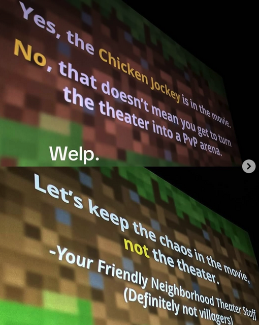
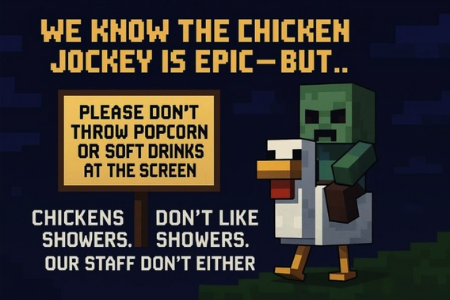

The release of the highly anticipated minecraft movie (first announced June 27, 2016, has been “in production” since it’s release) resulted in quite a few memes
Chicken Jockey was probably the biggest meme that happened. It is basically just Steve saying “chicken jockey”. When the movie first came out and was streaming in cinemas, people would throw their popcorn up and scream “CHICKEN JOCKEYYYYYY”. This would often be followed by around 10-20 seconds of clapping. Although, there have been many cases where this was taken very far, a handful of them resulting in police being called. This has also made some cinemas put warnings before the movie starts to not throw popcorn or to “be disrespectful”. There has even been an occasion where Jack Black (Steve) himself showed up to a cinema to tell people not to throw popcorn and drinks.



Lava chicken
The lava chicken is way more understandable because this time it was probably meant to actually be funny. Lava chicken is a 34 second long song sung by Steve in the movie. Interestingly, this short song actually holds the record for shortest song to ever make the Billboard Top 100 chart (It debuted at number 78 on the chart dated May 3, 2025).
Lyrics:
La-la-la-lava
Ch-ch-ch-chicken
Steve’s lava chicken, yeah, it’s tasty as hell
Ooh, mamacita, now you’re ringing the bell
Crispy and juicy, now you’re having a snack
Ooh super spicy, it’s a lava attack
Other quotes
There were many other popular quotes in the minecraft movie that also got a 10-20 second long applause when the movie was streaming in cinemas. “I am Steve” is probably the most popular one, out of all of these. It happened when the main protagonists first encountered Steve after being attacked by zombies. “Flint and Steel” was also rather popular, said by Steve of course, when he finds flint and steel in a nether portal chest. “The nether” was said by Steve when he first entered the nether, and “Elytra wingsuits” was said when Steve gave Garret and Henry elytra. “Enderpearl’ is said when Steve explains to Garret what an enderpearl is, and of course there's a handful of other less popular ones listed below:
-“They love crushing a loaf”
-“This pig is mine”
-“Water bucket- release!”
-“Hola”
-“Pink house!”
-“They’re a bunch of big softies!”
-“A sweet blade”
-“The enderman”
-“Boots of swiftness”
-“They’re the villagers!”
-“I think this is Wyoming”
-“Coming in hot!”
-“This.. is a crafting table”
-“TNT”
-“Big ol’ red ones”
-“As a child, I yearned for the mines”
-“Welcome to the stash”
-“KA-DOOSH!”
-“Blades for days”
-“Diamond armour- full set!”